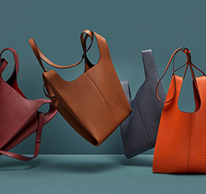
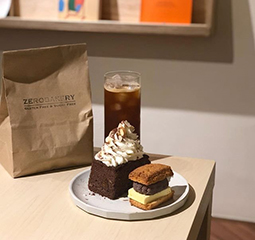
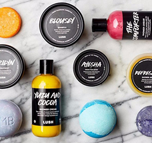
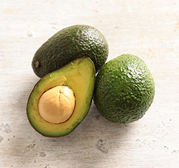
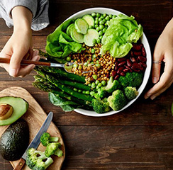

-

100% 지속 가능한 패션
- 멀버리 포토벨로 토트백
-
지속가능한 비건 패션의 관심이 점차 높아지는 요즘,
친환경적인 소재로 완성하는 '착한' 패션 아이템을 만나보자
-

건강과 맛, 둘 다 챙기자!
- 비건 베이커리 카페 Top3
-
맛있는데 건강해!
글루텐 프리, 신선한 재료, 키토제닉 등 다양한
취향에 맞춰서 먹는 건강 디저트
-

동물 실험 No!
- 착한 메이크업 브랜드 10
-
우리 상상보다 더 많은 동물들이 화장품을 위해
희생되고 있다는 걸 알고있나요?
-

닭 없이 만드는 인공 계란?
- 정말로 비슷할까?
-
인공계란, 어딘가 낯설고 뭔가 믿을 수 없는 느낌이 난다구요? 하지만 이미 소비자들에게 판매가 되고 있답니다!
-

버터가 생각날 때,
- 아보카도 Avocado
-
과일임에도 불구하고 영양과 지방이 풍부하며, 가을과 잘 어울리는 풍미를 지닌 아보카도의 매력을 살펴보자.
-

이제 쉽게 장 볼 수 있어요
- 헬로 네이쳐 '비건존' 오픈
-
까다로운 비건 장보기를 쉽고 빠르게 해결하는 비건 전문 존을 오픈했습니다!
쉽고 빠른 비건 장보기 환경